📊 Visualizations Gallery
Source Directory: defectpl/examples/NV_diamond/hse06_out/zpl_ems_force_mode
📋 Properties Summary
The table below summarizes the key scalar physical properties and simulation parameters extracted from the dataset located at the path variable specified above.
| Property | Value |
|---|---|
| Calculation Run Mode | Force Mode |
| Zero-Phonon Line (ZPL) Energy | 1.991 eV |
| Total Huang-Rhys (HR) Factor | 3.439309 |
| Debye-Waller (DW) Factor | 3.2087\% |
| Total Number of Atoms (natoms) | 215 |
| ZPL Broadening Factor (\(\gamma\)) | 2.00 meV |
| Gaussian Broadening (\(\sigma\)) | 0.006000 eV |
| Energy Mesh Resolution | 1000 points/eV |
🌌 Track 1: Emission Intensities & Peak Profiles
These plots capture the macroscopic optical output of your quantum emitter, tracking the transition lineshape from multi-phonon couplings down to individual core configuration coordinate equivalents.
1. Macroscopic Intensity Sideband
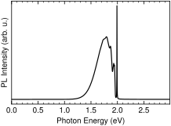
Figure 1: Photoluminescence intensity vs. photon energy.
2. Effective One-Dimensional Model for High Degree of Electron-Phonon Coupling
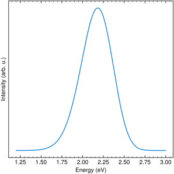
Figure 2: Effective single-mode configuration coordinate lineshape representation under 1D harmonic approximation.
🎛️ Track 2: Electron-Phonon (EP) Spectral Function with Other Variables
These figures combine a twin \(y\)-axis framework with continuous color-mapped scatter overlays or unified curves to show relationships between energy levels, coupling matrices, and localized defect dynamics.
3. EP Spectral Function with pHR and Localization Ratio
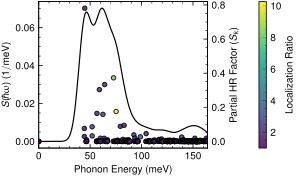
Figure 3: Joint spectral function \(S(\omega)\) and partial Huang-Rhys factors \(S_k\) mapped directly by atomic spatial localization ratio across the phonon energy spectrum.
4. EP Spectral Function with pHR and Inverse Participation Ratio
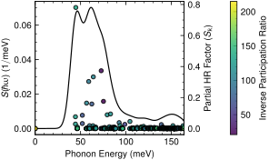
Figure 4: Joint spectral function \(S(\omega)\) and partial Huang-Rhys factors \(S_k\) mapped by Inverse Participation Ratio (IPR).
5. EP Spectral Function & Partial HR Factor
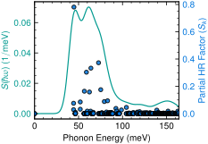
Figure 5: Clean dual-axis overlay matching continuous spectral density \(S(\omega)\) directly against discrete \(S_k\) weights.
🔬 Track 3: Phonon and Vibrational Displacement
These diagnostics inspect internal lattice dynamics, showing where the crystal structure deforms upon vertical electronic transition.
6. Generalized Vibrational Displacement
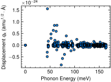
Figure 6: Vibration displacement \(q_k\) for each phonon mode.
7. Phonon Eigenvalues vs. Mode
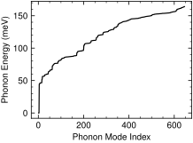
Figure 7: Phonon energy vs. index.
🧩 Track 4: Phonon Localization Metrics
Isolated metrics used to contrast localized deep-defect states against bulk-like host crystal vibrations.
8. Inverse Participation Ratio (IPR)
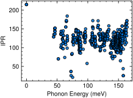
Figure 8: IPR vs. phonon energy.
9. Spatial Localization Ratio
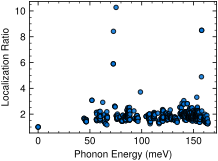
Figure 9: Localization ratio versus phonon energies.
📈 Track 5: Partial HR Factor and Spectral Density Function
Standalone profiles highlighting fundamental coupling signatures before peak broadening or convolution.
10. Partial Huang-Rhys Factor (\(S_k\)) Profile
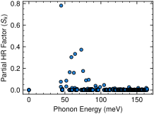
Figure 10: Raw coupling weight contribution (\(S_k\)) per individual vibrational mode.
11. Pure Spectral Density Function
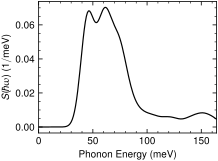
Figure 11: Electron-Phonon Spectral Function \(S(\omega)\) vs. the phonon energies.